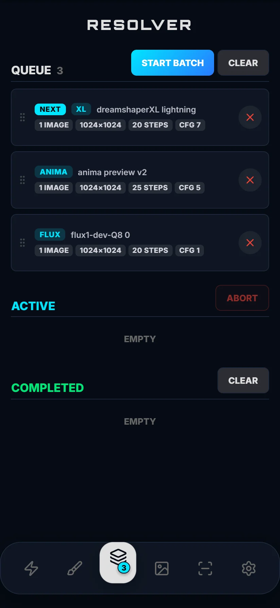
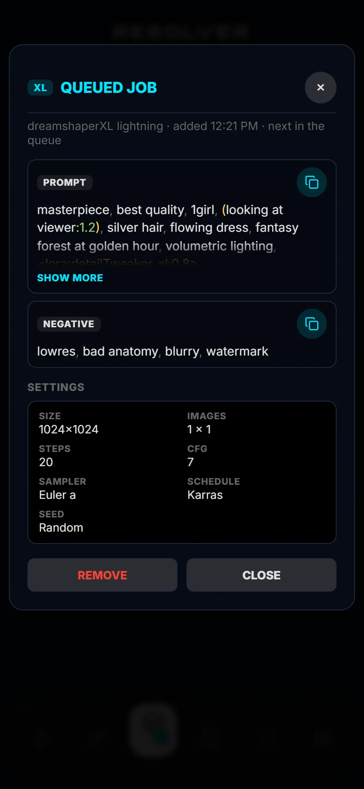

Docs / Review
Queue
Set up several jobs (different prompts, models, settings), line them up, and let your PC work through them while you do something else. The number on the dock’s icon is how many are waiting.
Adding jobs
- Set up a job as for generatingOn any model tab of Generate: prompt, checkpoint, settings, extensions.
- Tap Add to queueThe button beside GENERATE. The job is saved as it is now, so you can change the tab and add another right away.
- Open Queue and tap START BATCHJobs run one after another, from the top. You can keep adding while it runs.
The Queue tab
- QUEUE
- Jobs waiting, the next one marked NEXT. START BATCH runs them; CLEAR empties the list.
- ACTIVE
- The job running now, with its image count and a progress line along the card. The header shows steps done (ADetailer’s included). SKIP drops the image being made and goes on; ABORT stops.
- COMPLETED
- Finished jobs with a thumbnail. Tap the thumbnail to see the job’s images full screen. CLEAR empties the list (the images stay in History).
Each card shows the mode (SDXL, Anima, Flux…), the checkpoint, and chips with its main settings.
- Tap a card for its details: the prompt and negative (or Forge Couple’s background and regions), each with copy, and all its settings. REMOVE takes a waiting job out.
- Hold and drag a waiting card to change the order. Near the top or bottom the page scrolls.
- The last card you tapped stays outlined, so you don’t lose your place.


The queue keeps going with the screen off or the app in the background, with progress in your notifications. See Background & Notifications.
All combinations
With wildcards or {a|b} choices in the prompt, More Settings → All combinations makes every combination instead of random picks: {red|blue} dress, {day|night} gives 4 images. Its line shows how many the prompt makes.
Big numbers are split into runs: Config → Prompts sets Combinations per run (100) and Queued jobs at most (50). When a prompt makes more than one run, the app asks whether to queue them all. Try it:
The wildcards here are the examples from Wildcards: hair color (5 options), places (4), pose (3). Counted by the app’s own engine.
- Each run carries on from where the last one stopped. After an ABORT, the next run starts again at the image that was aborted.
- From Add to queue the question offers QUEUE … ONLY (just the next run) instead of GENERATE … NOW.
- Emptying the prompt turns All combinations off.